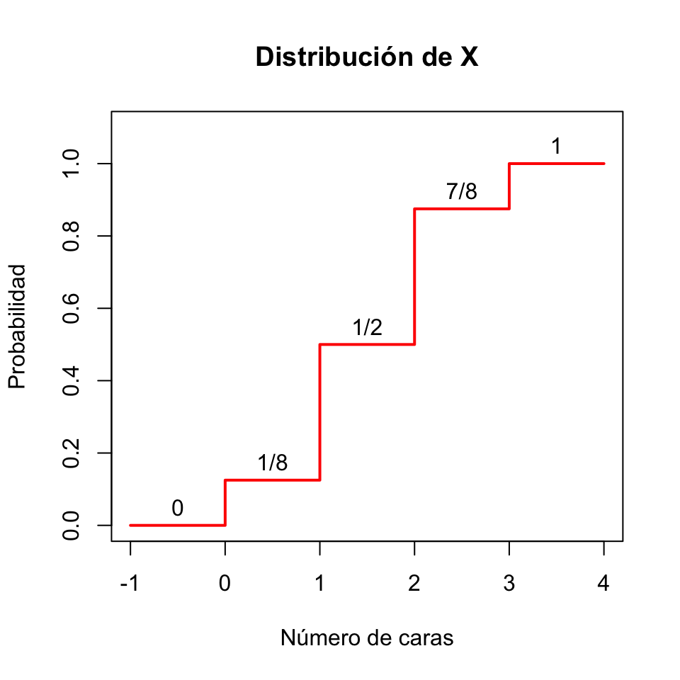
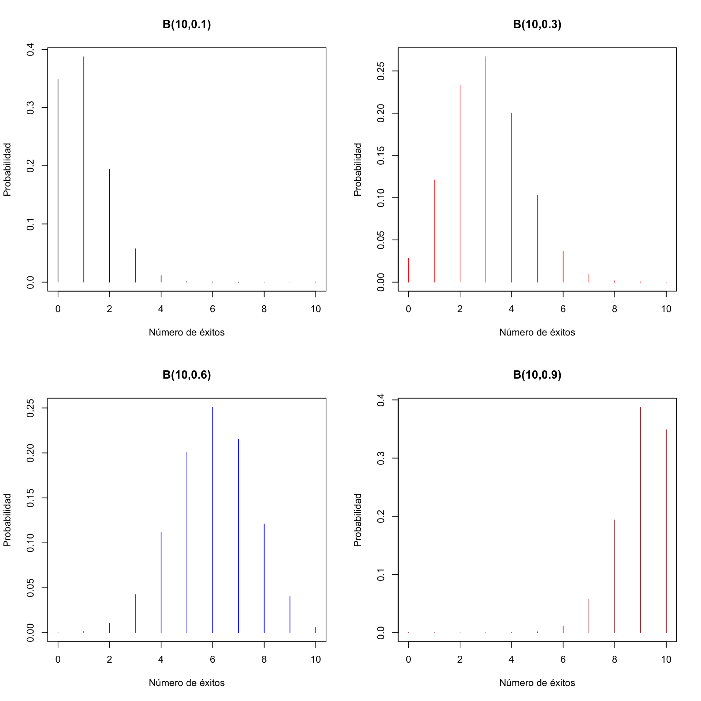
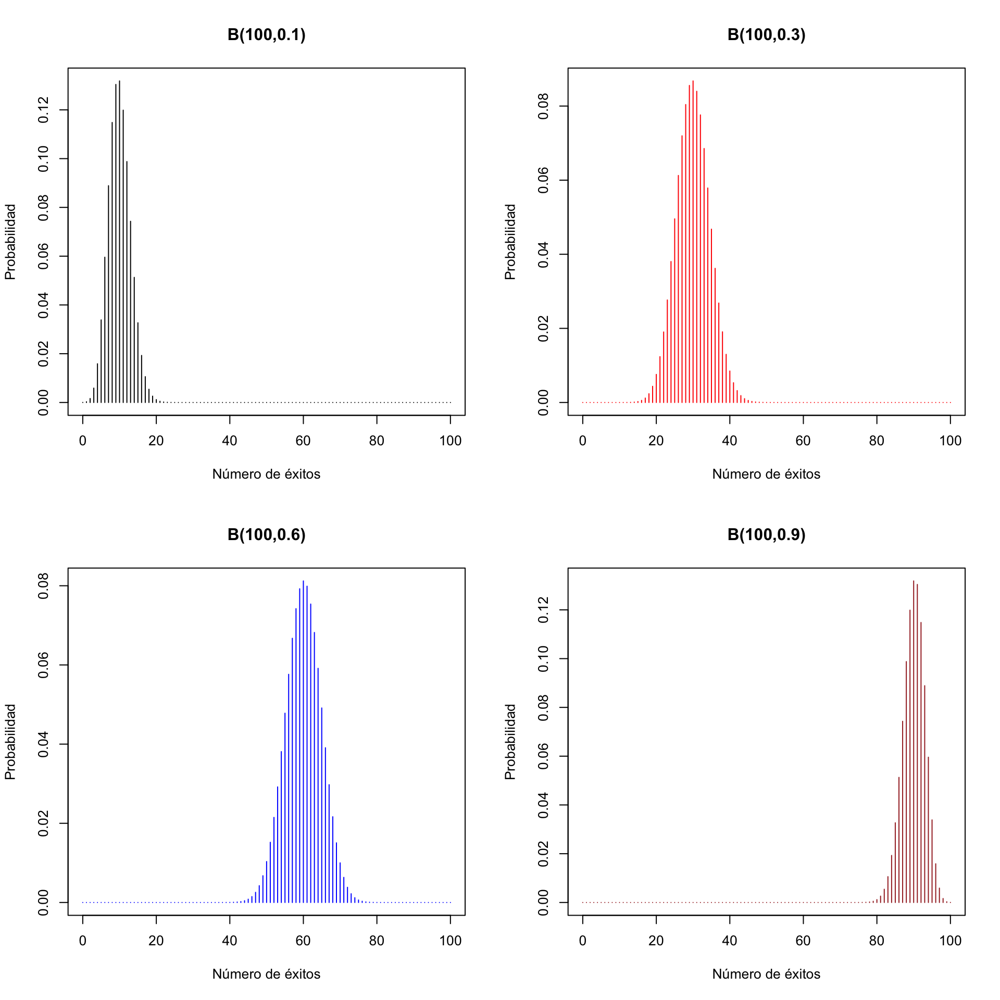
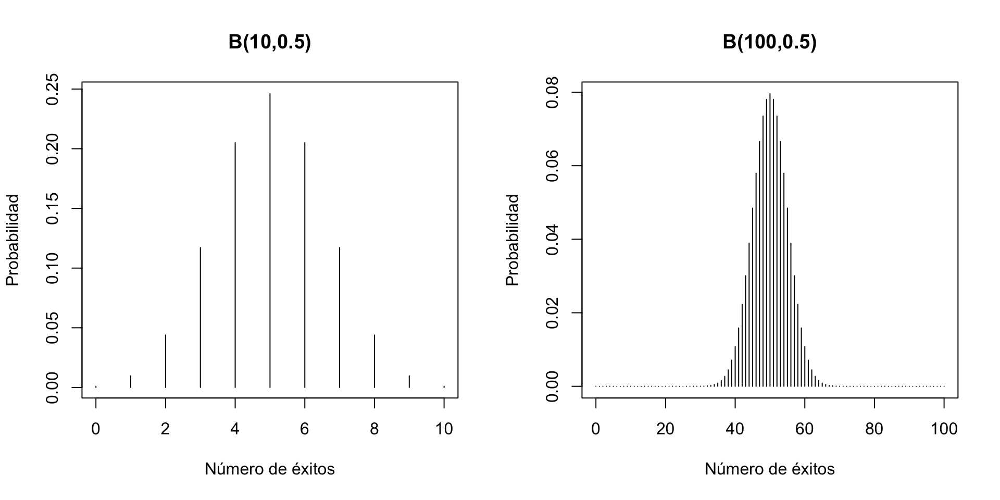
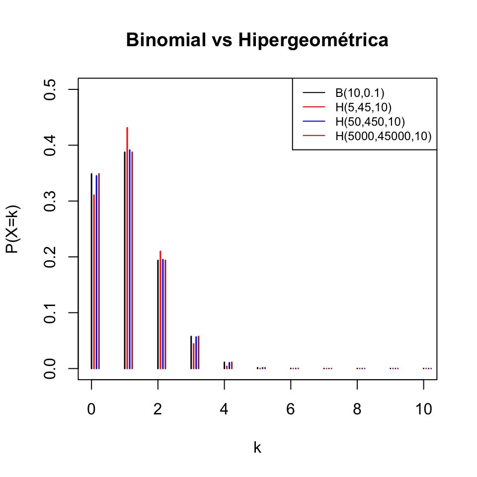
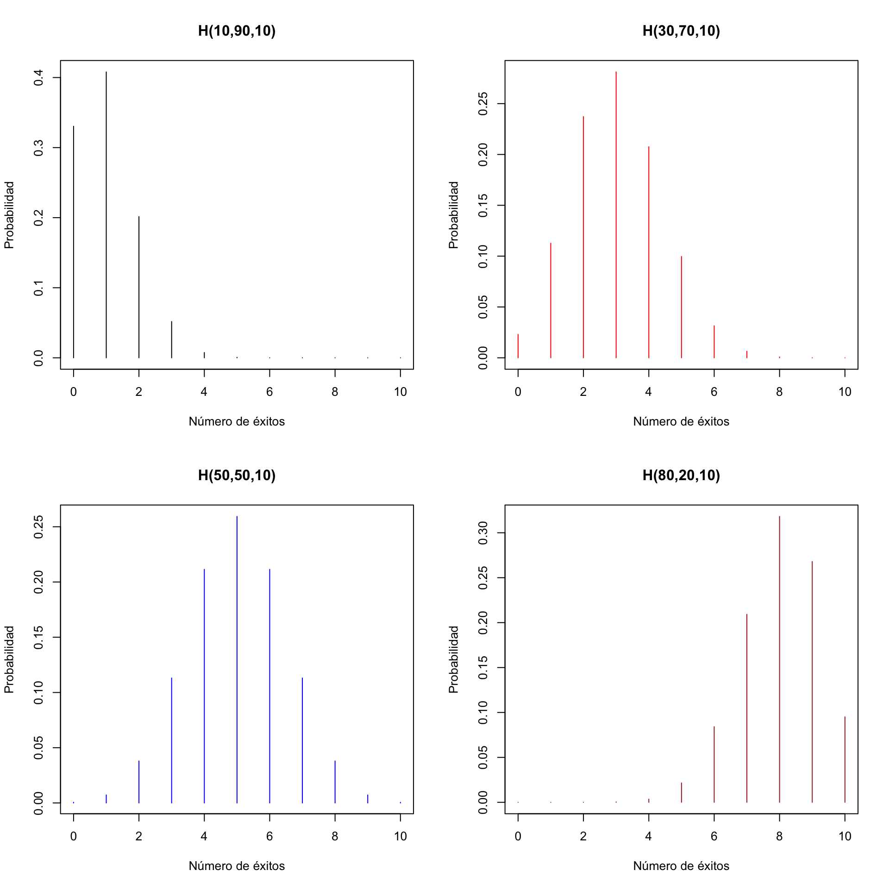
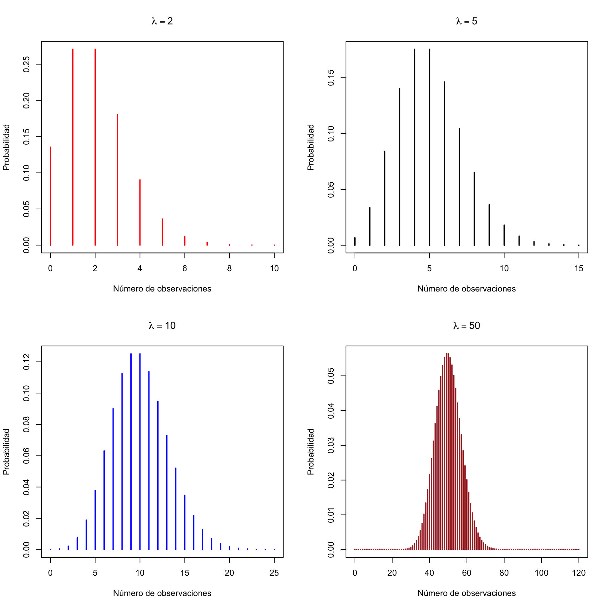

Lección 10 Variables aleatorias discretas
Una variable aleatoria sobre una población \(\Omega\) es una función \[ X: \Omega\to \mathbb{R} \] que asigna a cada sujeto de \(\Omega\) un número real. La idea intuitiva tras esta definición es que una variable aleatoria mide una característica de los sujetos de \(\Omega\) que varía al azar de un sujeto a otro. Por ejemplo:
Tomamos una persona de una población y medimos su nivel de colesterol, o su altura, o su número de hijos… En este caso, \(\Omega\) es la población bajo estudio, de la que tomamos la persona que medimos.
Lanzamos una moneda equilibrada 3 veces y contamos las caras que obtenemos. En este caso, \(\Omega\) es la población virtual de las secuencias de 3 lanzamientos de una moneda equilibrada.
Procurad adquirir la disciplina de describir siempre las variables aleatorias mediante una plantilla del estilo de “Tomamos … y medimos …”, para que os quede claro cuál es la población y cuál la función. Además, añadid las unidades si es necesario. Por ejemplo:
- “Tomamos una persona de Mallorca y medimos su altura (en cm)”.
Fijaos en que esta variable aleatoria no es la misma que
- “Tomamos una persona de Mallorca y medimos su altura (en m)”
porque, aunque mide lo mismo sobre los mismos sujetos, les asigna números diferentes. Y también es diferente de
- “Tomamos una persona de Suecia y medimos su altura (en cm)”
porque ha cambiado la población.
En cambio en
- “Lanzamos una moneda 3 veces al aire y contamos las caras”
no hay necesidad de especificar unidades, a no ser que vayáis a usar una unidad inesperada (yo qué sé, que contéis las caras en fracciones de docena).
Lo que más nos interesará de una variable aleatoria son las probabilidades de los sucesos que define. ¿Y qué tipo de sucesos son los que nos interesan cuando medimos características numéricas? Pues básicamente sucesos definidos mediante igualdades y desigualdades. Por ejemplo, si \(X\) es la variable aleatoria “Tomamos una persona y medimos su nivel de colesterol en plasma (en mg/dl)”, nos pueden interesar sucesos del estilo de:
El conjunto de las personas cuyo nivel de colesterol está entre 200 y 240. Lo denotaremos \[ 200\leqslant X\leqslant 240 \]
El conjunto de las personas cuyo nivel de colesterol es menor o igual que 200: \[ X\leqslant 200 \]
El conjunto de las personas cuyo nivel de colesterol es mayor que 180: \[ X>180 \]
El conjunto de las personas cuyo nivel de colesterol es exactamente 180: \[ X=180 \]
Etc.
Normalmente, de estos sucesos lo que nos interesará será su probabilidad, y entonces usaremos notaciones del estilo de las siguientes:
\(P(200\leqslant X\leqslant 240)\). Esto denota la probabilidad de que una persona tenga el nivel de colesterol entre 200 y 240. Para abreviar, lo leeremos “la probabilidad de que \(X\) esté entre 200 y 240”. Y recordad que nuestras probabilidades son proporciones. Por lo tanto, esta probabilidad es la proporción de personas (de la población \(\Omega\) donde hayamos definido la variable \(X\)) con nivel de colesterol entre 200 y 240.
\(P(X\leqslant 200)\): La probabilidad de que una persona tenga el nivel de colesterol menor o igual que 200; o la probabilidad de que \(X\) sea menor o igual que 200; o la proporción de personas con nivel de colesterol menor o igual que 200…
Etc.
En este contexto, indicaremos normalmente la unión con una o y la intersección con una coma. Por ejemplo, si \(X\) es la variable aleatoria “Lanzamos una moneda 6 veces y contamos las caras”:
\(P(X\leqslant 2\text{ o }X\geqslant 5)\): Probabilidad de sacar como máximo 2 caras o como mínimo 5.
\(P(2\leqslant X, X< 5)\): Probabilidad de sacar un número de caras que sea mayor o igual que 2 y menor que 5; es decir, \(P(2\leqslant X< 5)\).
Dos variables aleatorias \(X,Y\) son independientes cuando, para todos los pares de valores \(a,b\in \mathbb{R}\), los sucesos \[ X\leqslant a, Y\leqslant b \] son independientes, lo que viene a decir intuitivamente que el valor que toma una de ellas sobre un sujeto no influye en la probabilidad del valor que toma la otra.
Por ejemplo, si tomamos una persona y:
\(X\): le pedimos que lance una moneda 3 veces y contamos las caras
\(Y\): medimos su nivel de colesterol en plasma (en mg/dl)
(seguramente) \(X\) e \(Y\) son independientes.
Más en general, unas variables aleatorias \(X_1,X_2,\ldots,X_n\) son independientes cuando, para cualesquiera \(a_1,a_2,\ldots,a_n\in \mathbb{R}\), los sucesos \[ X_1\leqslant a_1, X_2\leqslant a_2,\ldots, X_n\leqslant a_n \] son independientes. Es decir, cuando los valores que toman algunas de estas variables sobre un sujeto nunca influyen en los valores que toman las otras.
Vamos a distinguir dos tipos de variables aleatorias:
Discretas: Sus posibles valores son datos cuantitativos discretos:
- Número de caras en 3 lanzamientos de una moneda
- Número de hijos
- Número de casos nuevos de COVID-19 en un día en Mallorca
Continuas: Sus posibles valores son datos cuantitativos continuos:
- Peso
- Nivel de colesterol en sangre
- Diámetro de un tumor
En lo que queda de esta lección trataremos las variables aleatorias discretas. Dejamos las continuas para la próxima lección.
10.1 Densidad y distribución
Sea \(X: \Omega\to \mathbb{R}\) una variable aleatoria discreta.
Su dominio \(D_X\) es el conjunto de los valores que puede tomar: más concretamente, el conjunto de los \(x\in \mathbb{R}\) tales que \(P(X=x)>0\).
Su función de densidad es la función \(f_X:\mathbb{R}\to [0,1]\) definida por \[ f_X(x)=P(X=x) \] Es decir, la función que asigna a cada \(x\in \mathbb{R}\) la probabilidad de que \(X\) valga \(x\) (la proporción de sujetos de la población en los que \(X\) vale \(x\), la frecuencia relativa del valor \(x\) en el total de la población…).
Su función de distribución es la función \(F_X:\mathbb{R}\to [0,1]\) definida por \[ F_X(x)=P(X\leqslant x) \] Es decir, la función que asigna a cada \(x\in \mathbb{R}\) la probabilidad de que el valor de \(X\) sea \(\leqslant x\) (la proporción de sujetos de la población en los que \(X\) vale \(\leqslant x\), la frecuencia relativa acumulada de \(x\) en el total de la población… También se la suele llamar función de probabilidad acumulada para poner énfasis en esta última interpretación).
Ejemplo 10.1 Sea \(X\) la variable aleatoria “Lanzamos 3 veces una moneda equilibrada y contamos las caras”. Entonces
Su dominio es el conjunto de sus posibles valores: \(D_X=\{0,1,2,3\}\).
Su función de densidad viene definida por \(f_X(x)=P(X=x)\):
- \(f_X(0)=P(X=0)=1/8\) (la probabilidad de sacar 0 caras)
- \(f_X(1)=P(X=1)=3/8\) (la probabilidad de sacar 1 cara)
- \(f_X(2)=P(X=2)=3/8\) (la probabilidad de sacar 2 caras)
- \(f_X(3)=P(X=3)=1/8\) (la probabilidad de sacar 3 caras)
- \(f_X(x)=P(X=x)=0\) para cualquier otro valor de \(x\) (la probabilidad de sacar \(x\) caras es 0 si \(x\notin\{0,1,2,3\}\))
En resumen, la función de densidad de \(X\) es \[ f_X(x) =\left\{ \begin{array}{ll} 1/8 & \text{ si $x=0$}\\ 3/8 & \text{ si $x=1$}\\ 3/8 & \text{ si $x=2$}\\ 1/8 & \text{ si $x=3$}\\ 0 & \text{ si $x\neq 0,1,2,3$} \end{array}\right. \]
Figura 10.1: Función de densidad de la variable aleatoria que cuenta el número de caras en 3 lanzamientos
Veamos su función de distribución \(F_X\). Recordad que \(F_X(x)=P(X\leqslant x)\) y que nuestra variable solo puede tomar los valores 0, 1, 2 y 3.
Si \(x<0\), \(F_X(x)=P(X\leqslant x)=0\) porque \(X\) no puede tomar ningún valor estrictamente negativo.
Si \(0\leqslant x<1\), el único valor \(\leqslant x\) que puede tomar \(X\) es el 0 y por lo tanto \[ F_X(x)=P(X\leqslant x)=P(X=0)=f_X(0)=1/8 \]
Si \(1\leqslant x<2\), los únicos valores \(\leqslant x\) que puede tomar \(X\) son 0 y 1 y por lo tanto \[ \begin{array}{rl} F_X(x) & =P(X\leqslant x)=P(X=0\text{ o }X=1)\\ & =f_X(0)+f_X(1)=4/8=1/2 \end{array} \]
Si \(2\leqslant x<3\), los únicos valores \(\leqslant x\) que puede tomar \(X\) son 0, 1 y 2 y por lo tanto \[ \begin{array}{rl} F_X(x) & =P(X\leqslant x)=P(X=0\text{ o }X=1\text{ o }X=2)\\ & =f_X(0)+f_X(1)+f_X(2)=7/8 \end{array} \]
Si \(3\leqslant x\), seguro que obtenemos un número de caras \(\leqslant x\) y por lo tanto \(F_X(x)=P(X\leqslant x)=1\).
Así pues, la función \(F_X\) es la función \[ F_X(x) =\left\{ \begin{array}{ll} 0 & \text{ si $x<0$}\\ 1/8 & \text{ si $0\leqslant x< 1$}\\ 4/8 & \text{ si $1\leqslant x< 2$}\\ 7/8 & \text{ si $2\leqslant x< 3$}\\ 1 & \text{ si $3\leqslant x$} \end{array}\right. \] Su gráfico es el siguiente:
Figura 10.2: Función de distribución de la variable aleatoria que cuenta el número de caras en 3 lanzamientos
Observad en este gráfico que esta función de distribución \(F_X\) es creciente y escalonada. Esto es general. Si \(X\) es una variable aleatoria discreta:
\(F_X\) es una función escalonada, con saltos en los valores de \(D_X\), que son los únicos con probabilidad estrictamente mayor que 0 y por lo tanto los únicos que “suman” probabilidad.
\(F_X\) es creciente, porque si \(x\leqslant y\), todos los sujetos con \(X\leqslant x\) también tienen \(X\leqslant y\), y por lo tanto \[ P(X\leqslant x)\leqslant P(X\leqslant y). \]
Si \(x_0,y_0\in D_X\) y \(x_0<y_0\), entonces \(F_X(x_0)< F_X(y_0)\), porque \[ \begin{array}{rl} F_X(x_0)\!\!\!\!\! & =P(X\leqslant x_0)<P(X\leqslant x_0)+P(X=y_0)\\ & =P(X\leqslant x_0\text{ o }X=y_0)\leqslant P(X\leqslant y_0)=F_X(y_0) \end{array} \]
Como los valores que toma \(F_X\) son probabilidades, no pueden ser ni menores que 0 ni mayores que 1.
El conocimiento de \(f_X\), más las reglas del cálculo de probabilidades, permite calcular la probabilidad de cualquier suceso relacionado con \(X\): \[ P(X\in A) =\sum_{x\in A} P(X=x) = \sum_{x\in A} f_X(x) \] En particular \[ F_X(x_0)=P(X\leqslant x_0)=\sum_{x\leqslant x_0} f_X(x) \]
La moda de una variable aleatoria discreta \(X\) es el valor (o los valores) \(x_0\) tal que \(f_X(x_0)=P(X=x_0)\) es máximo. Se trata por lo tanto del “valor más frecuente de \(X\)” en la población. Por ejemplo, para nuestra variable aleatoria que cuenta el número de caras en 3 lanzamientos de una moneda equilibrada, la moda son los valores 1 y 2.
Hay un aspecto de las variables aleatorias discretas sobre el que queremos llamar la atención, sobre todo por comparación con las variables continuas:
Por ejemplo, con la variable \(X\) “Lanzamos una moneda equilibrada 3 veces y contamos las caras”:
La probabilidad de sacar 2 caras o menos ya la hemos calculado, y es \(P(X\leqslant 2)=7/8\)
Pero la probabilidad de sacar menos de 2 caras, \(P(X<2)\), es la sacar 1 cara o menos, por lo tanto \(P(X<2)=P(X\leqslant 1)=4/8\).
Considerad la variable aleatoria \(X\) “Lanzamos una moneda equilibrada al aire tantas veces como sea necesario hasta que salga una cara por primera vez, y contamos cuántas veces la hemos tenido que lanzar”.
- ¿Cuál es su dominio?
- ¿Cuál es su función de densidad?
- ¿Cuál es su moda? ¿Qué significa?
- ¿Cuál es su función de distribución?
10.2 Esperanza
Cuando tomamos una muestra de una variable aleatoria \(X\) definida sobre una población, podemos calcular la media y la desviación típica de sus valores para obtener una idea de cuál es su valor central y de la variabilidad de sus valores. También nos podemos preguntar por este tipo de información para el total de la población: ¿cuál es el “valor medio” de \(X\) sobre toda la población? ¿\(X\) toma valores muy dispersos, o más bien concentrados alrededor de este valor medio? Lo primero lo medimos con la media, o esperanza, de \(X\), y lo segundo con su desviación típica. Empecemos con la primera.
La media, o esperanza (o valor esperado, valor medio, valor promedio…), de una variable aleatoria discreta \(X\) con densidad \(f_X:D_X\to [0,1]\) es \[ E(X)=\sum_{x\in D_X} x\cdot f_X(x) \] A veces también la denotaremos por \(\mu_X\).
La interpretación natural de \(E(X)\) es que es la media de los valores de la variable \(X\) en el total de la población \(\Omega\). En efecto, como \(P(X=x)\) es la proporción de los sujetos de \(\Omega\) en los que \(X\) vale \(x\), entonces \[ E(X)=\sum_{x\in D_X} x\cdot P(X=x) \] es el promedio del valor de \(X\) sobre todos los elementos de \(\Omega\). Comparadlo con el ejemplo siguiente.
Ejemplo 10.2 Si, en una clase, un 10% de los estudiantes han sacado un 4 en un examen, un 20% un 6, un 50% un 8 y un 20% un 10, ¿cuál ha sido la nota media del examen?
Suponemos que calcularíais esta media como \[ 4\cdot 0.1+6\cdot 0.2+8\cdot 0.5+10\cdot 0.2=7.6 \] Pues este valor es la media de la variable aleatoria \(X\) “Tomo un estudiante de esta clase y miro qué nota ha sacado en este examen”: \[ \begin{array}{rl} E(X)\!\!\!\!\! &=4\cdot P(X=4)+6\cdot P(X=6)+8\cdot P(X=8)+10\cdot P(X=10)\\ & = 4\cdot 0.1+6\cdot 0.2+8\cdot 0.5+10\cdot 0.2=7.6 \end{array} \]
Aparte de su interpretación como “el promedio de \(X\) en el total de la población”, \(E(X)\) es también el valor esperado de \(X\), en el sentido siguiente:
Suponed que tomamos una muestra aleatoria de \(n\) sujetos de la población, medimos \(X\) sobre ellos y calculamos la media aritmética de los \(n\) valores obtenidos. Entonces, cuando el tamaño \(n\) de la muestra tiende a \(\infty\), esta media aritmética tiende a valer \(E(X)\) “casi siempre”, en el sentido de que la probabilidad de que su límite sea \(E(X)\) es 1.
Es decir: si midiéramos \(X\) sobre muchos sujetos elegidos al azar, de media casi seguro que obtendríamos un valor muy próximo a \(E(X)\).
Ejemplo 10.3 Seguimos con la variable aleatoria \(X\) “Lanzamos una moneda equilibrada al aire 3 veces y contamos las caras”. Su esperanza es \[ E(X)= 0\cdot \frac{1}{8}+1\cdot \frac{3}{8}+2\cdot \frac{3}{8}+3\cdot \frac{1}{8}=1.5 \]
Esto nos dice que:
La media de \(X\) es 1.5: El valor medio de la variable \(X\) sobre toda la población de secuencias de 3 lanzamientos de una moneda equilibrada es 1.5.
El valor esperado de \(X\) es 1.5: Si repitiésemos muchas veces el experimento de lanzar la moneda 3 veces y contar las caras, la media de los resultados obtenidos daría, muy probablemente, un valor muy cercano a 1.5. Abreviamos esto diciendo que si lanzamos la moneda 3 veces, de media esperamos sacar 1.5 caras.
Más en general, si \(g:\mathbb{R}\to \mathbb{R}\) es una aplicación, \[ E(g(X))=\sum_{x\in D_X} g(x)\cdot f_X(x) \] De nuevo, su interpretación natural es que es el promedio de \(g(X)\) sobre la población en la que medimos \(X\), y también es el valor “esperado” de \(g(X)\) en el sentido anterior.
\[ E(X^2)= 0\cdot \frac{1}{8}+1\cdot \frac{3}{8}+2^2\cdot \frac{3}{8}+3^2\cdot \frac{1}{8}=3 \]
En los dos últimos ejemplos hemos visto que si \(X\) es la variable aleatoria que cuenta el número de caras en 3 lanzamientos de una moneda equilibrada, \(E(X^2)=3\) pero \(E(X)^2=1.5^2=2.25\). Por lo tanto, puede pasar que \(E(X^2) \neq E(X)^2\). (De hecho, solo se da la igualdad \(E(X^2)= E(X)^2\) cuando \(X\) puede tomar un único valor, pero no vamos a entrar en tanto detalle.)
Más en general, dada una aplicación \(g:\mathbb{R}\to \mathbb{R}\), lo usual es que \(E(g(X))\neq g(E(X))\).
La esperanza de las variables aleatorias discretas tiene las propiedades siguientes, todas razonables si las interpretáis en términos del valor promedio de \(X\) sobre la población:
Sea \(b\) una variable aleatoria constante, que sobre todos los individuos de la población toma el mismo valor \(b\in \mathbb{R}\). Entonces \(E(b)=b\).
Si en una clase todo el mundo saca un 8 de un examen, la nota media es 8, ¿no?
La esperanza es lineal:
Si \(a,b\in \mathbb{R}\), \(E(aX+b)=aE(X)+b\)
Si en una clase la media de un examen ha sido un 6 y decidimos multiplicar por 1.2 todas las notas y sumarles 1 punto, la nueva nota media será 1.2·6+1=8.2, ¿no?
Si \(Y\) es otra variable aleatoria, \(E(X+Y)=E(X)+E(Y)\).
Si en una clase la media de la parte de cuestiones de un examen ha sido un 3.5 (sobre 5) y la de la parte de ejercicios ha sido un 3 (sobre 5) y la nota del examen es la suma sus dos partes, la nota media del examen será un 3.5+3=6.5, ¿no?
Más en general, si \(X_1,\ldots,X_n\) son variables aleatorias y \(a_1,\ldots,a_n,b\in \mathbb{R}\), \[ E(a_1X_1+\cdots +a_nX_n+b)=a_1E(X_1)+\cdots +a_nE(X_n)+b \]
La esperanza es monótona creciente: Si \(X\leqslant Y\) (en el sentido de que el valor de \(X\) sobre un sujeto de la población \(\Omega\) siempre es menor o igual que el valor de \(Y\) sobre el mismo sujeto), entonces \(E(X)\leqslant E(Y)\).
Si todos sacáis mejor nota de Anatomía que de Bioestadística, la nota media de Anatomía será mayor que la de Bioestadística, ¿no?
10.3 Varianza y desviación típica
La varianza de una variable aleatoria discreta \(X\) es \[ \sigma(X)^2 =E((X-\mu_X)^2) =\sum_{x\in D_X} (x-\mu_X)^2\cdot f_X(x) \] Es decir, es el valor medio del cuadrado de la diferencia entre \(X\) y su media \(\mu_X\). También la denotaremos \(\sigma_X^2\).
Fijaos en que se trata de la traducción “poblacional” de la definición de varianza para una muestra, y por lo tanto sirve para medir lo mismo que aquella: la dispersión de los resultados de \(X\) respecto de la media. Solo que ahora para toda la población.
La identidad siguiente os puede ser útil para calcular varianzas “a mano”. Ya vimos en la lección anterior esta igualdad para la varianza de una muestra.
La desviación típica (o desviación estándar) de una variable aleatoria discreta \(X\) es la raíz cuadrada positiva de su varianza: \[ \sigma(X)=+\sqrt{\sigma(X)^2} \] También mide la dispersión de los valores de \(X\) respecto de la media. La denotaremos a veces por \(\sigma_X\).
El motivo para introducir la varianza y la desviación típica para medir la dispersión de los valores de \(X\) es la misma que en estadística descriptiva: la varianza es más fácil de manejar (no involucra raíces cuadradas) pero sus unidades son las de \(X\) al cuadrado, mientras que las unidades de la desviación típica son las de \(X\), y por lo tanto su valor es más fácil de interpretar.
Ejemplo 10.5 Seguimos con la variable aleatoria \(X\) “Lanzamos una moneda equilibrada 3 veces y contamos las caras”. Su varianza es:
\[ \begin{array}{rl} \sigma(X)^2 \!\!\!\!\! & \displaystyle=(0-1.5)^2\cdot \frac{1}{8}+(1-1.5)^2\cdot \frac{3}{8}\\ &\displaystyle\qquad +(2-1.5)^2\cdot \frac{3}{8}+(3-1.5)^2\cdot \frac{1}{8}=0.75 \end{array} \] Si recordamos que \(\mu_X=E(X)=1.5\) y \(E(X^2)=3\), podemos ver que \[ E(X^2)-\mu_X^2=3-1.5^2=0.75=\sigma(X)^2 \] Su desviación típica es \[ \sigma(X) =\sqrt{\sigma(X)^2}=\sqrt{0.75}= 0.866 \]
Veamos algunas propiedades de la varianza y la desviación típica:
Si \(b\) es una variable aleatoria constante que sobre todos los individuos de la población toma el valor \(b\in \mathbb{R}\), entonces \(\sigma(b)^2=\sigma(b)=0\).
Una variable aleatoria constante tiene cero dispersión, ¿no?
\(\sigma(aX+b)^2=a^2\cdot \sigma(X)^2\).
\(\sigma(aX+b)=|a|\cdot \sigma(X)\) (recordad que la desviación típica es positiva, y \(+\sqrt{a^2}=|a|\)).
Si \(X,Y\) son variables aleatorias independientes, \[ \sigma(X+Y)^2=\sigma(X)^2+\sigma(Y)^2 \] y por lo tanto \[ \sigma(X+Y)=\sqrt{\sigma(X)^2+\sigma(Y)^2} \] Si no son independientes, en general esta igualdad es falsa. Por poner un ejemplo extremo, \[ \sigma(X+X)^2=4\sigma(X)^2\neq \sigma(X)^2+\sigma(X)^2. \]
Más en general, si \(X_1,\ldots,X_n\) son variables aleatorias independientes y \(a_1,\ldots,a_n,b\in \mathbb{R}\), \[ \sigma(a_1X_1+\cdots +a_nX_n+b)^2=a_1^2\sigma(X_1)^2+\cdots +a_n^2\sigma(X_n)^2 \]
10.4 Cuantiles
Sea \(p\) tal que \(0<p<1\). El cuantil de orden \(p\) (o \(p\)-cuantil) de una variable aleatoria \(X\) discreta es el valor \(x_p\in D_X\) tal que \(P(X\leqslant x_p)\geqslant p\) pero \(P(X< x_p)<p\). Es decir, es el menor valor de su dominio \(D_X\) tal que \(P(X\leqslant x_p)\geqslant p\).
Por ejemplo, que el 0.25-cuantil de una variable aleatoria discreta \(X\) sea, yo qué sé, 8, significa que al menos una cuarta parte de la población tiene un valor de \(X\) menor o igual que 8, pero estrictamente menos de un 25% de la población tiene un valor de \(X\) estrictamente menor que 8.
Si existe algún \(x_p\in D_X\) tal que \(F_X(x_p)(=P(X\leqslant x_p))=p\), entonces el \(p\)-cuantil es ese \(x_p\), porque, para todo otro \(x\in D_x\):
Si \(x<x_p\), \(P(X\leqslant x)<P(X\leqslant x_p)=F_X(x_p)=p\) y por lo tanto \(x\) no puede ser el \(p\)-cuantil de \(X\).
Si \(x>x_p\), \(p=P(X\leqslant x_p)\leqslant P(X<x)\), y por lo tanto \(x\) tampoco puede ser el \(p\)-cuantil de \(X\).
Como en estadística descriptiva, algunos cuantiles de variables aleatorias tienen nombres propios. Por ejemplo:
La mediana de \(X\) es su 0.5-cuantil
El primer y el tercer cuartiles de \(X\) son sus \(0.25\)-cuantil y \(0.75\)-cuantil, respectivamente.
Etc.
Ejemplo 10.6 Seguimos con la variable aleatoria \(X\) “Lanzamos una moneda equilibrada 3 veces y contamos las caras”. Recordemos que su función de distribución es
\[ F_X(x)=\left\{ \begin{array}{ll} 0 & \text{ si $x<0$}\\ 0.125 & \text{ si $0\leqslant x<1$}\\ 0.5 & \text{ si $1\leqslant x<2$}\\ 0.875 & \text{ si $2\leqslant x<3$}\\ 1 & \text{ si $3\leqslant x $} \end{array} \right. \]

Entonces, por ejemplo:
Su 0.1-cuantil es 0
Su 0.25-cuantil es 1
Su mediana es 1
Su 0.75-cuantil es 2
Aunque usamos “media”, “varianza”, “cuantiles”, etc. tanto para muestras como para variables aleatorias, no debéis confundirlas.
Una variable aleatoria representa una característica númerica de los sujetos de una población. Por ejemplo:
“Tomamos un estudiante de medicina y medimos su altura en m.”
La media y la varianza de esta variable son las de toda la población de estudiantes de medicina.
Una muestra de una variable aleatoria son los valores de la misma sobre un subconjunto (relativamente pequeño) de la población. Por ejemplo:
Medimos las alturas (en m) de 50 estudiantes de medicina de este curso.
La media y la varianza de esta muestra son solo las de esas 50 alturas.
Cuando queramos destacar que una media, una varianza etc. son las de una variable aleatoria sobre toda una población, los calificaremos de poblacionales.
10.5 Familias importantes de variables aleatorias discretas
En esta sección vamos a describir tres familias de variables aleatorias “distinguidas” que tenéis que conocer:
- Binomial
- Hipergeométrica
- Poisson
Cada una de estas familias tienen un tipo específico de función de densidad, que depende de uno o varios parámetros.
De estas familias de variables tenéis que saber:
- Distinguirlas: saber cuando una variable aleatoria es de una de estas familias.
- Sus propiedades básicas, como por ejemplo cuáles son sus parámetros, cuál es su valor esperado y si su densidad es simétrica o presenta una cola a algún lado.
- Usar algún programa o alguna aplicación para calcular cosas con ellas cuando sea necesario.
10.5.1 Variables aleatorias binomiales
Un experimento de Bernoulli es una acción con solo dos posibles resultados, que identificamos con “Éxito” (\(E\)) y “Fracaso” (\(F\)), y de la que, en principio, no podemos predecir su resultado debido a la influencia del azar. Por ejemplo, lanzar un dado cúbico y mirar si ha salido un 6 (\(E\): sacar un 6; \(F\): cualquier otro resultado).
La probabilidad de éxito \(p\) de un experimento de Bernoulli es la probabilidad de obtener \(E\). Es decir, \(P(E)=p\). Naturalmente, entonces, \(P(F)=1-p\). En el ejemplo del dado, donde \(E\) es sacar un 6, \(p=1/6\).
Por ejemplo:
Lanzar una moneda equilibrada y mirar si da cara:
- \(E\): Sacar cara
- \(p=1/2\)
Realizar un test PCR de COVID-19 a una persona y mirar si da positivo:
- \(E\): Dar positivo
- \(p\): La proporción de personas que dan positivo en el test (su tasa de positividad).
Pedir a una persona si la estadística le aburre:
- \(E\): Que la estadística le aburra
- \(p\): La proporción de personas a las que aburre la estadística
Figura 10.3: ¿Con cuál te identificas?
Una variable aleatoria de Bernoulli de parámetro \(p\) (abreviadamente, \(Be(p)\)) es una variable aleatoria \(X\) consistente en efectuar un experimento de Bernoulli y dar 1 si se ha obtenido un éxito y 0 si se ha obtenido un fracaso.
Una variable aleatoria binomial de parámetros \(n\) y \(p\) (abreviadamente, \(B(n,p)\)) es una variable aleatoria \(X\) que cuenta el número de éxitos \(E\) en una secuencia de \(n\) repeticiones independientes de un mismo experimento de Bernoulli de probabilidad de éxito \(p\). Independientes significa que las \(n\) variables aleatorias de Bernoulli, una para cada repetición del experimento de Bernoulli, son independientes; intuitivamente, que el resultado de cada repetición en la secuencia no depende de los resultados de las otras.
Llamaremos a \(n\) el tamaño de las muestras y a \(p\) la probabilidad (poblacional) de éxito. A veces también diremos de una variable \(X\) de tipo \(B(n,p)\) que tiene distribución binomial de parámetros \(n\) y \(p\).
Por ejemplo:
Una variable de Bernoulli \(Be(p)\) es una variable binomial \(B(1,p)\).
Lanzar una moneda equilibrada 10 veces y contar las caras es una variable binomial \(B(10,0.5)\)
Elegir 20 personas al azar, una tras otra, permitiendo repeticiones y de manera independiente las unas de las otras, realizar sobre ellas un test PCR y contar cuántos dan positivo, es una variable binomial \(B(20,p)\) con \(p\) la tasa de positividad del test.
El tipo más común de variables binomiales en medicina es este último:
Tenemos el resultado siguiente.
Teorema 10.2 Si \(X\) es una variable \(B(n,p)\):
Su dominio es \(D_X=\{0,1,\ldots,n\}\)
Su función de densidad es \[ f_X(k)=\left\{\begin{array}{ll} \displaystyle\binom{n}{k}p^k(1-p)^{n-k} & \text{ si $k\in D_X$}\\ 0 & \text{ si $k\notin D_X$} \end{array}\right. \]
Su valor esperado es \(E(X)=np\)
Su varianza es \(\sigma(X)^2=np(1-p)\)
Recordad que:
El factorial \(m!\) de un número natural \(m\) se define como \(m!=m(m-1)\cdots 2\cdot 1\) si \(m\geqslant 1\). Si \(m=0\), se toma \(0!=1\).
El número combinatorio \(\binom{n}{k}\) se define como \[ \binom{n}{k}=\frac{\overbrace{n\cdot (n-1)\cdots (n-k+1)}^k}{k\cdot (k-1)\cdots 2\cdot 1}=\frac{n!}{k!(n-k)!} \] y nos da el número de subconjuntos de \(k\) elementos de \(\{1,\ldots,n\}\).
Supongamos que efectuamos \(n\) repeticiones consecutivas e independientes de un experimento de Bernoulli de probabilidad de éxito \(p\) y contamos el número de éxitos \(E\); llamaremos \(X\) a la variable aleatoria resultante. Para seguir la demostración, si no os sentís muy cómodos con el razonamiento con \(n\)’s y \(k\)’s abstractos, vosotros id repitiéndolo tomando, por ejemplo, \(n=4\).
Los posibles resultados son todas las palabras posibles de \(n\) letras formadas por \(E\)’s y \(F\)’s. Como los experimentos sucesivos son independientes, la probabilidad de cada una de estas palabras es el producto de las probabilidades de sus resultados individuales. Por lo tanto, si una palabra concreta tiene \(k\) letras \(E\) y \(n-k\) letras \(F\) (se han obtenido \(k\) éxitos y \(n-k\) fracasos), su probabilidad es \(p^k(1-p)^{n-k}\), independientemente del orden en el que hayamos obtenido los resultados.
Para calcular la probabilidad de obtener una secuencia con \(k\) éxitos, sumaremos las probabilidades de obtener cada una de las secuencias de \(n\) letras con \(k\) \(E\)’s. Como todas tienen la misma probabilidad, el resultado será la probabilidad de una palabra con \(k\) \(E\)’s y \(n-k\) \(F\)’s, que hemos quedado que es \(p^k(1-p)^{n-k}\), multiplicada por el número total de palabras diferentes con \(k\) \(E\)’s y \(n-k\) \(F\)’s.
¿Cuántas palabras hay con \(k\) \(E\)’s y \(n-k\) \(F\)’s? Cada una queda caracterizada por las posiciones de las \(k\) \(E\)’s, por lo tanto es el número de posibles elecciones de conjuntos de \(k\) posiciones para las \(E\)’s. Este es el número de posibles subconjuntos de \(k\) elementos (las posiciones donde habrá las \(E\)’s) de \(\{1,\ldots,n\}\), que es el número combinatorio \(\binom{n}{k}\). Por lo tanto ya tenemos \[ P(X=k)=\binom{n}{k}p^k(1-p)^{n-k}. \]
A partir de aquí, para calcular el valor esperado y la varianza se suman \[ \begin{array}{l} \displaystyle E(X)=\sum_{k=0}^n k\cdot \binom{n}{k}p^k(1-p)^{n-k}\\ \displaystyle \sigma(X)^2=\sum_{k=0}^n k^2\cdot \binom{n}{k}p^k(1-p)^{n-k}-\Big(\sum_{k=0}^n k\cdot \binom{n}{k}p^k(1-p)^{n-k}\Big)^2 \end{array} \] Os podéis fiar de nosotros, dan \(np\) y \(np(1-p)\), respectivamente.
Si lo pensáis, veréis que el valor de \(E(X)\) es el “esperado”. Si tomáis una muestra aleatoria de \(n\) sujetos de una población en la que la proporción de sujetos \(E\) es \(p\), ¿cuántos sujetos \(E\) “esperáis” obtener en vuestra muestra? Pues una proporción \(p\) de la muestra, es decir \(p\cdot n\), ¿no?
El tipo de teorema anterior es el que hace que nos interese conocer algunas familias distinguidas frecuentes de variables aleatorias. Si, por ejemplo, reconocemos que una variable aleatoria es binomial y conocemos sus valores de \(n\) y \(p\) y sabemos el teorema anterior, automáticamente sabemos su función de densidad, y con ella su función de distribución, su valor esperado, su varianza etc., sin necesidad de deducir toda esta información cada vez que encontremos una variable de estas.
Conocer las propiedades de las variables aleatorias binomiales solo es útil si sabemos reconocer cuándo estamos ante una de ellas. Fijaos en que en una variable aleatoria binomial \(B(n,p)\):
Contamos cuántas veces ocurre un suceso (el éxito \(E\)) en una secuencia de intentos.
En cada intento, el suceso que nos interesa pasa o no pasa, sin términos medios.
El número de intentos es fijo, \(n\).
Cada intento es independiente de los otros.
En cada intento, la probabilidad de que pase el suceso que nos interesa es siempre la misma, \(p\).
Por ejemplo:
Una mujer tiene 4 hijos. La probabilidad de que un hijo sea niña es fija, 0.51. El sexo de cada hijo es independiente de los otros. Contamos cuántas hijas tiene.
Es una variable binomial \(B(4,0.51)\).
En una aula hay 5 chicos y 45 chicas. Escogemos 10 estudiantes, uno tras otro y sin repetirlos, para hacerles una pregunta. Cada elección es independiente de las otras. Contamos cuántos chicos hemos interrogado.
No es una variable binomial: como no podemos repetir estudiantes, en cada ronda la probabilidad de escoger un chico depende del sexo de los estudiantes elegidos antes que él. Por lo tanto la \(p\) no es la misma en cada elección.
Por ejemplo, en la primera ronda la probabilidad de elegir un chico es 5/50=0.1. Ahora, si en la primera ronda sale elegido un chico, la probabilidad de que en la segunda ronda volvamos a elegir un chico se reduce a 4/49=0.0816, mientras que si la primera elección sale una chica, la probabilidad de chico en la segunda ronda sube a 5/49=0.102.
En una aula hay 5 chicos y 45 chicas. Escogemos 10 estudiantes, uno tras otro pero cada estudiante puede ser elegido más de una vez, para hacerles una pregunta. Cada elección es independiente de las otras. Contamos cuántos chicos hemos interrogado.
Ahora sí que es una variable binomial \(B(10,0.9)\).
En una aula hay 5 chicos y 45 chicas. Escogemos estudiantes uno tras otro y cada estudiante puede ser elegido más de una vez, para hacerles una pregunta. Cada elección es independiente de las otras. Contamos cuántos estudiantes he tenido que elegir para llegar a interrogar 5 chicos.
No es una variable binomial: no cuenta el número de éxitos en una secuencia de un número fijo de intentos, sino cuántos intentos se han necesitado para llegar a un número fijo de éxitos.
En una aula hay 5 chicos y 45 chicas. Lanzamos una moneda equilibrada: si sale cara escogemos 10 estudiantes y si sale cruz escogemos 20, para hacerles una pregunta. Tanto en un caso como en el otro, los elegimos uno tras otro, cada estudiante puede ser elegido más de una vez y cada elección es independiente de las otras. Contamos cuántos chicos hemos interrogado.
No es una variable binomial: el número de intentos no es fijo.
La probabilidad de que un día de noviembre llueva es de un 32%. Escogemos una semana de noviembre y contamos cuántos días ha llovido.
No es de una variable binomial. Aunque a priori cada día tenga la misma probabilidad de lluvia, que llueva un día no es independiente de que llueva el anterior.
Si en cambio escogiéramos 7 días novembrinos, de entre el total de todos los días de todos los noviembres de la historia (y permitiendo que se repitieran), entonces sí que se trataría de una variable binomial.
En España hay 46,700,000 personas, de las cuales un 11.7% son diabéticos. Escogemos 100 españoles diferentes al azar (de manera independiente unos de otros) y contamos cuántos son diabéticos.
No es binomial, pero prácticamente sí que lo es, porque las probabilidades apenas varían de una elección a la siguiente. En este caso haremos la trampa de considerarla binomial.
Veamos algunos gráficos de la función densidad de variables aleatorias binomiales. Primero, para \(n=10\) y diferentes valores de \(p\).

Ahora para \(n=100\):

Podréis observar que si \(p<0.5\), la distribución \(B(n,p)\) presenta una cola a la derecha, y si \(p>0.5\), la cola es a la izquierda. Es razonable. Por ejemplo, si \(p<0.5\), el valor esperado será \(pn<n/2\) y hay más valores posibles a la derecha de \(pn\) que a su izquierda (porque una binomial \(B(n,p)\) puede llegar a tomar el valor \(n\), pero no puede tomar valores negativos).
Si \(p=0.5\), es simétrica: como \(E\) y \(F\) tienen la misma probabilidad, 0.5, la probabilidad de sacar \(k\) \(E\)’s es la misma que la de sacar \(k\) \(F\)’s, es decir, la de sacar \(n-k\) \(E\)’s.

Para agilizar los tests de COVID-19, se ha propuesto la estrategia siguiente (llamada pooled sample testing o simplemente pooling). Unimos grupos de 10 muestras en una sola muestra y la analizamos. Si da negativo, será señal de que todas la muestras originales eran negativas. Declaramos entonces negativos los 10 sujetos de las muestras originales. Si da positivo, será porque al menos una de las muestras originales era positiva. En este caso, analizamos las 10 muestras por separado.
Supongamos que el test tiene una especificidad y una sensibilidad del 100%. Observad entonces que si los 10 sujetos están sanos, hacemos un solo test, mientras que si alguno está infectado, hacemos 11. Con el enfoque tradicional, un test por muestra, sin complicaciones, haríamos siempre 10 tests.
Sea \(p\) la prevalencia de la COVID-19 en un momento y población dados. Dadas 10 muestras tomadas en ese momento en esa población, ¿cuál es el valor esperado de tests que tenemos que realizar? Para \(p\) pequeña, del orden del 1% al 5%, ¿significaría el pooling un ahorro considerable de tests?
¿Cómo efectuar cálculos con una variable aleatoria de una familia dada?
Una posibilidad es usar una aplicación de móvil o tablet. Nuestra favorita es Probability distributions, disponible tanto para Android como para iOS.
Figura 10.4: La app Probability Distributions.
Otra posibilidad es usar R. R conoce todas la distribuciones de variables aleatorias importantes; por ejemplo, para R la binomial es binom. Entonces
Añadiendo al nombre de la distribución el prefijo
d, tenemos su función de densidad: de la binomial serádbinom.Añadiendo al nombre de la distribución el prefijo
p, tenemos su función de distribución: de la binomial,pbinom.Añadiendo al nombre de la distribución el prefijo
q, tenemos sus cuantiles: para la binomial,qbinom.Añadiendo al nombre de la distribución el prefijo
r, tenemos una función que produce muestra aleatorias de números con esa distribución de probabilidad: para la binomial,rbinom.
Estas funciones se aplican al argumento de la función y los parámetros de la variable aleatoria en su orden usual (todo entre paréntesis y separados por comas). Por ejemplo, para la binomial, se aplican a (argumento, \(n\), \(p\)). Veamos algunos ejemplos.
Si lanzamos 20 veces un dado equilibrado (de 6 caras), ¿cuál es la probabilidad de sacar exactamente 5 unos?
Si llamamos \(X\) a la variable aleatoria que cuenta el número de unos en secuencias de 20 lanzamientos de un dado equilibrado, se trata de una variable binomial \(B(20,1/6)\). Nos piden \(P(X=5)\), y esta probabilidad nos la da la función de densidad de \(X\). Es \(f_X(5)\):
dbinom(5,20,1/6)## [1] 0.1294103dbinom a \((x,n,p)\).
Si lanzamos 20 veces un dado equilibrado, ¿cuál es la probabilidad de sacar como máximo 5 unos?
Con las notaciones anteriores, nos piden \(P(X\leqslant 5)\), y esta probabilidad nos la da la función de distribución de \(X\). Es \(F_X(5)\):
pbinom(5,20,1/6)## [1] 0.8981595Si lanzamos 20 veces un dado equilibrado, ¿cuál es la probabilidad de sacar menos de 5 unos?
Con las notaciones anteriores, nos piden \(P(X< 5)\), es decir, \(P(X\leqslant 4)=F_X(4)\):
pbinom(4,20,1/6)## [1] 0.7687492Si lanzamos 20 veces un dado equilibrado, ¿cuál es la probabilidad de sacar 5 unos o más?
Con las notaciones anteriores, nos piden \(P(X\geqslant 5)\). Como lo contrario de sacar 5 unos o más es sacar 4 unos o menos, tenemos que \(P(X\geqslant 5)=1-P(X\leqslant 4)=1-F_X(4)\):
1-pbinom(4,20,1/6)## [1] 0.2312508Si lanzamos 20 veces un dado equilibrado, ¿cuál es el menor número \(N\) de unos para el que la probabilidad de sacar como máximo \(N\) unos llega al 25%?
Nos piden el menor valor \(N\) tal que \(P(X\leqslant N)\geqslant 0.25\), y esto por definición es el 0.25-cuantil de \(X\):
qbinom(0.25,20,1/6)## [1] 2Veamos que en efecto \(N=2\) cumple lo pedido: la probabilidad de sacar como máximo 2 unos es
pbinom(2,20,1/6)## [1] 0.3286591y la probabilidad de sacar como máximo 1 uno es
pbinom(1,20,1/6)## [1] 0.1304203Vemos por tanto que con 1 uno no llegamos al 25% de probabilidad y con 2 sí.
- Queremos simular 50 rondas de lanzar 20 veces un dado equilibrado y contar los unos, es decir, queremos una muestra aleatoria de tamaño 50 de nuestra variable \(X\):
rbinom(50,20,1/6)## [1] 3 4 1 4 3 4 4 3 5 4 4 1 5 6 2 7 2 3 3 5 4 7 3 3 2 6 4 4 4 3 0 2 6 3 2 2 0 4
## [39] 3 2 5 1 3 3 5 3 2 3 7 3Cada vez que repitamos esta instrucción seguramente obtendremos una muestra aleatoria nueva:
rbinom(50,20,1/6)## [1] 3 3 8 1 3 3 4 2 6 3 4 3 1 4 3 1 1 2 3 1 6 4 7 3 3 2 2 2 2 6 1 2 2 5 4 3 4 4
## [39] 3 2 3 3 4 3 7 5 6 1 4 6rbinom(50,20,1/6)## [1] 3 1 3 3 3 1 4 1 4 3 5 1 2 3 5 2 2 5 4 3 3 4 4 3 3 4 3 4 2 3 2 3 3 0 5 2 5 3
## [39] 3 3 2 4 1 3 4 3 3 0 4 1rbinom(50,20,1/6)## [1] 2 6 2 4 2 6 3 4 4 1 3 1 2 2 6 3 2 1 5 3 9 5 2 3 0 5 1 5 2 5 4 5 5 4 3 7 4 3
## [39] 1 0 5 8 2 4 4 5 3 1 3 510.5.2 Variables aleatorias hipergeométricas
Recordad que el paradigma de variable aleatoria binomial es: tengo una población con una proporción \(p\) de sujetos que satisfacen una condición \(E\), tomo una muestra aleatoria simple de tamaño \(n\) y Contamos el número de sujetos \(E\) en mi muestra. Si cambiamos “muestra aleatoria simple” por “muestra aleatoria sin reposición”, la distribución de la variable aleatoria que obtenemos es otra: la hipergeométrica.
Una variable aleatoria es hipergeométrica (o tiene distribución hipergeométrica) de parámetros \(N\), \(M\) y \(n\) (para abreviar, \(H(N,M,n)\)) es cualquier variable aleatoria \(X\) que podáis identificar con el proceso siguiente: Tenemos una población formada por \(N\) sujetos que satisfacen una condición \(E\) y \(M\) sujetos que no la satisfacen (por lo tanto, en total, \(N+M\) sujetos en la población), tomamos una muestra aleatoria sin reposición de tamaño \(n\) y contamos el número de sujetos \(E\) en esta muestra.
Llamaremos a \(N\) el número poblacional de éxitos, a \(M\) el número poblacional de fracasos y a \(n\) el tamaño de las muestras. Fijaos entonces que \(N+M\) es el tamaño total de la población y que \(N/(N+M)\) es la probabilidad poblacional de éxito (la fracción de sujetos que satisfacen \(E\) en el total de la población). Con R, igual que la distribución binomial era binom, la distribución hipergeométrica es hyper.
Ejemplo 10.7 Recordad uno de los ejemplos de variables no binomiales de la sección anterior. En una aula hay 5 chicos y 45 chicas. Escogemos 10 estudiantes, uno tras otro y sin repetirlos, para hacerles una pregunta. Cada elección es independiente de las otras. Contamos cuántos chicos hemos interrogado. Se trata de una variable hipergeométrica \(H(5,45,10)\).
Teorema 10.3 Si \(X\) es una variable \(H(N,M,n)\):
Su dominio es \(D_X=\{0,1,\ldots,\text{min}(N,n)\}\)
Su función de densidad es \[ f_X(k)=\left\{\begin{array}{ll} \displaystyle\dfrac{\binom{N}{k}\cdot \binom{M}{n-k}}{\binom{N+M}{n}} & \text{ si $k\in D_X$}\\ 0 & \text{ si $k\notin D_X$} \end{array}\right. \]
Su valor esperado es \(E(X)=\dfrac{nN}{N+M}\)
Su varianza es \(\sigma(X)^2=\dfrac{nNM(N+M-n)}{(N+M)^2(N+M-1)}\)
Fijaos que si llamamos \(p\) a la probabilidad poblacional de éxito, \(p=N/(N+M)\), entonces \[ E(X)=np. \] Es la misma fórmula que para las variables binomiales \(B(n,p)\) (y si lo pensáis un rato veréis que, de nuevo y por el mismo argumento, es lo razonable). Por otro lado, si llamamos \(\mathbf{P}\) al tamaño de la población, \(\mathbf{P}=N+M\), entonces \[ \sigma(X)^2=n\cdot\dfrac{N}{N+M}\cdot\dfrac{M}{N+M}\cdot\frac{N+M-n}{N+M-1}=np(1-p)\cdot\dfrac{\mathbf{P}-n}{\mathbf{P}-1} \] que es la varianza de una variable \(B(n,p)\) multiplicada por un factor de corrección debido a que ahora tomamos muestras sin repetición y la varianza es más pequeña que si las tomamos con repetición. A la raíz cuadrada de este factor, \[ \sqrt{\dfrac{\mathbf{P}-n}{\mathbf{P}-1}} \] se la llama factor de población finita.
Fijaos en que si \(\mathbf{P}\) es muchísimo más grande que \(n\), tendremos que \(\mathbf{P}-n\approx \mathbf{P}-1\) y por lo tanto \((\mathbf{P}-n)/(\mathbf{P}-1)\approx 1\) y la varianza de la hipergeométrica será aproximadamente la de la binomial. Esto es consistente con lo que ya hemos comentado: si la población es mucho más grande que la muestra, tomar las muestras con o sin reposición no afecta demasiado a las muestra obtenidas, por lo que la distribución de probabilidad ha de ser muy parecida. Recordad los ejemplos siguientes:
En España hay 46,700,000 personas, de las cuales un 11.7% son diabéticos. Escogemos 100 españoles y contamos cuántos son diabéticos.
Esta variable es, en realidad, hipergeométrica con \(N=0.117\cdot 46700000=5463900\), \(M=46700000-N=41236100\) y \(n=100\), pero en la práctica la consideramos binomial \(B(100,0.117)\). El factor de población finita es \[ \frac{46700000-100}{46700000-1}=0.9999979 \] En cambio:
En una aula hay 5 chicos y 45 chicas. Escogemos 10 estudiantes, uno tras otro y sin repetirlos, para hacerles una pregunta. Cada elección es independiente de las otras. Contamos cuántos chicos hemos interrogado.
Esta variable es hipergeométrica \(H(5,45,10)\). El factor de población finita en esta caso no es aproximadamente 1: da \[ \frac{50-10}{50-1}=0.8163 \] No es correcto aproximarla por una binomial \(B(10,0.1)\).
El gráfico siguiente compara la función de densidad de una variable \(B(10,0.1)\) con las de variables hipergeométricas \(H(5,45,10)\), \(H(50,450,10)\) y \(H(5000,45000,10)\) para que veáis cómo a medida que el tamaño de la población crece (manteniendo constante la proporción poblacional de éxitos), la distribución hipergeométrica se aproxima a la binomial.

Veamos algunos gráficos de la función densidad de variables aleatorias hipergeométricas. Fijemos el tamaño de la población en \(N+M=100\), y tomaremos \(n=10\) y diferentes valores de \(N\).

Podréis observar que, como en el caso binomial, si \(p=N/(N+M)<0.5\), la distribución \(H(N,M,p)\) presenta una cola a la derecha, y si \(p>0.5\), la cola es a la izquierda. Si \(p=0.5\), es simétrica.
10.5.3 Variables aleatorias de Poisson
Una variable aleatoria \(X\) es de Poisson (o tiene distribución de Poisson) con parámetro \(\lambda>0\) (para abreviar, \(Po(\lambda)\)) cuando:
Su dominio es \(D_X=\mathbb{N}\), el conjunto de todos los números naturales (es decir, teóricamente puede tomar como valor cualquier número natural).
Su función de densidad es \[ f_X(k)=\left\{\begin{array}{ll} e^{-\lambda}\cdot \dfrac{\lambda^k}{k!} & \text{ si $k\in \mathbb{N}$}\\ 0 & \text{ si $k\notin \mathbb{N}$} \end{array}\right. \]
Para R, la distribución de Poisson es pois.
Teorema 10.4 Si \(X\) es una variable \(Po(\lambda)\), entonces \(E(X)= \sigma(X)^2= \lambda\).
Es decir, el “parámetro” \(\lambda\) de una variable de Poisson es su valor esperado, y coincide con su varianza.
La respuesta es que la familia de Poisson incluye un tipo de variables aleatorias muy común en epidemiología.
Supongamos que tenemos un tipo de objetos que pueden darse en una región continua de tiempo o espacio. Por ejemplo, defunciones de personas por una determinada enfermedad en el decurso del tiempo, casos de un tipo de cáncer en diferentes zonas geográficas de un país, o números de bacterias en trozos de una superficie. Para simplificar el lenguaje, vamos a suponer que observamos apariciones de estos objetos en el tiempo.
Supongamos además que las apariciones de estos objetos satisfacen las propiedades siguientes:
Las apariciones de los objetos son aleatorias: en cada instante, un objeto se da, o no, al azar, con una probabilidad fija y constante.
Las apariciones de los objetos son independientes: que se dé un objeto en un instante concreto, no depende para nada de que se haya dado o no un objeto en otro instante.
Las apariciones de los objetos no son simultáneas: es prácticamente imposible que dos objetos de estos se den en el mismo instante exacto, medido con precisión infinita.
En esta situación, la variable \(X_t\) que toma un intervalo de tiempo de duración \(t\) y cuenta el número de objetos que se dan en él es de Poisson: \(Po(\lambda_t)\), con \(\lambda_t\) el número esperado de objetos en este intervalo de tiempo (es decir, el número medio de objetos en intervalos de tiempo de este tamaño).
Por ejemplo, cuando lo que cuentan ocurre al azar, son variables de Poisson:
El número de enfermos admitidos en urgencias en un día (o en 12 horas, o en una semana…)
El número de defunciones por una enfermedad concreta en un día (o en una semana, o en un año…)
El número de bacterias en un cuadrado de 1 cm de lado (o de 1 m de lado…)
Fijaos en que este tipo de conocimiento nos sirve para dos cosas:
Si sabemos que estas variables son de Poisson, conocemos su densidad y por lo tanto podemos calcular lo que queramos para ellas.
Si los datos que observamos tocarían seguir una distribución de Poisson pero parece que no (por ejemplo, porque su varianza sea muy diferente de su media, tan diferente que sea difícil de creer que la media y la varianza poblacionales sean iguales), entonces es señal de que algo “raro” está pasando en realidad.
Ejemplo 10.8 Observad la diferencia entre las dos variables siguientes:
Número semanal de defunciones por un tipo de cáncer en un país. El momento exacto de las defunciones se produce al azar, podemos entender que no se dan dos defunciones exactamente en el mismo instante, con precisión infinita, y las defunciones se producen de manera independiente. Es de Poisson.
Número semanal de defunciones en accidentes de tráfico en un país. De nuevo, el momento exacto de las defunciones se produce al azar y podemos entender que no se dan dos defunciones exactamente en el mismo instante, con precisión infinita. Pero las muertes en accidentes de tráfico no son independientes: en un mismo accidente mortal se pueden producir varias muertes casi simultáneas, las condiciones metereológicas o de alguna carretera pueden hacer que aumente durante un cierto período de tiempo la probabilidad de accidente mortal, etc. No es de Poisson.
Como las apariciones de los objetos que cuenta una variable de Poisson son aleatorias e independientes, el número medio de objetos es lineal en el tamaño de la región. Es decir, por ejemplo, en un intervalo de dos días esperamos ver el doble de objetos que en un día. O por ejemplo, si se diagnostican de media 32,240 casos de cáncer de colon anuales en España (y siguen una ley de Poisson), esperamos que de media se diagnostiquen 32240/52=620 casos semanales.
Veamos algunos gráficos de funciones de densidad de variables de Poisson.

Como podéis ver, la densidad de una variable de Poisson es asimétrica, con un máximo alrededor de \(\lambda\) y una cola a la derecha, pero a medida que \(\lambda\) crece, la asimetría se va atenuando.
10.6 Test
(1) Sea \(X\) una variable aleatoria discreta de media \(\mu\) y desviación típica \(\sigma\). ¿Cuál o cuáles de las afirmaciones siguientes son siempre verdaderas?
- \(E(X+2)=\mu+2\).
- \(\sigma(X+2)=\sigma+2\).
- \(\sigma(-X)=-\sigma\).
- \(\sigma(-X)=\sigma\).
- \(\sigma(X/2)=\sigma/2\).
- Ninguna de las otras afirmaciones es verdadera.
(2) La función de distribución \(F_X(x)\) de una variable aleatoria discreta \(X\) nos da:
- La probabilidad de obtener el valor \(x\).
- La probabilidad de obtener un valor entre \(-x\) y \(x\), ambos extremos incluidos.
- La probabilidad de obtener un valor entre \(0\) y \(x\), ambos extremos incluidos.
- La probabilidad de obtener un valor menor o igual que \(x\).
- La probabilidad de obtener un valor estrictamente menor que \(x\).
(3) La incidencia anual de un cierto accidente laboral sigue una distribución de Poisson. A lo largo del tiempo se ha observado que el 55% de los años no se produce ningún accidente. ¿Cuántos accidentes esperas que ocurran en un año?
- 0.55
- \(e^{-0.55}\)
- \(\ln(0.55)\) (\(\ln\) denota el logaritmo neperiano, en base \(e\))
- \(-\ln(0.55)\)
- Un valor que no es ninguno de los propuestos en las otras respuestas.
(4) Un tratamiento T cura el 20% de los enfermos de una enfermedad X. Marca todas las afirmaciones verdaderas.
- La distribución del número de individuos que se curan con el tratamiento T en una muestra aleatoria simple de 100 enfermos de X es aproximadamente simétrica.
- La distribución del número de individuos que se curan con el tratamiento T en una muestra aleatoria simple de 100 enfermos de X es más bien asimétrica a la izquierda.
- La distribución del número de individuos que se curan con el tratamiento T en una muestra aleatoria simple de 100 enfermos de X es más bien asimétrica a la derecha.
- La probabilidad de que T cure dos enfermos de X escogidos al azar es 0.4.
- En una muestra aleatoria simple de 50 enfermos de X, esperamos que T cure 10.
- Ninguna de las otras afirmaciones es verdadera.
(5) ¿Cuál o cuáles de las variables siguientes tienen una distribución binomial?
- El peso de una persona elegida al azar.
- Escogemos un número de lanzamientos al azar, lanzamos ese número de veces una moneda al aire, y contamos el número de caras.
- El número de glóbulos rojos en 1 mm3 de sangre.
- La proporción de hipertensos en una muestra aleatoria de 50 individuos.
- Escogemos 10 estudiantes diferentes en una clase de 20, y contamos cuántas mujeres han salido.
- Ninguna de ellas.
(6) ¿Cuál o cuáles de las variables siguientes tienen una distribución de Poisson?
- El peso de una persona elegida al azar.
- El número de casos diarios de COVID-19 en Mallorca.
- El número de glóbulos rojos en 1 mm3 de sangre.
- La proporción de hipertensos en una muestra aleatoria de 50 individuos.
- Escogemos 10 estudiantes diferentes en una clase de 20, y contamos cuántas mujeres han salido.
- Ninguna de ellas.
(7) Sean \(X\) e \(Y\) dos variables aleatorias discretas. ¿Cuál o cuáles de las afirmaciones siguientes son siempre verdaderas?
- Siempre es cierto que \(E(2X+3Y)=2E(X)+3E(Y)\)
- No siempre es cierto que \(E(2X+3Y)=2E(X)+3E(Y)\), pero sí que es cierto si \(X\) e \(Y\) son independientes
- Siempre es cierto que \(\sigma(2X+3Y)^2=2\sigma(X)^2+3\sigma(Y)^2\)
- No siempre es cierto que \(\sigma(2X+3Y)^2=2\sigma(X)^2+3\sigma(Y)^2\), pero sí que es cierto si \(X\) e \(Y\) son independientes
- Siempre es cierto que \(\sigma(2X+3Y)^2=4\sigma(X)^2+9\sigma(Y)^2\)
- No siempre es cierto que \(\sigma(2X+3Y)^2=4\sigma(X)^2+9\sigma(Y)^2\), pero sí que es cierto si \(X\) e \(Y\) son independientes
- Siempre es cierto que \(\sigma(2X+3Y)=2\sigma(X)+3\sigma(Y)\)
- No siempre es cierto que \(\sigma(2X+3Y)=2\sigma(X)+3\sigma(Y)\), pero sí que es cierto si \(X\) e \(Y\) son independientes
- Ninguna de las otras afirmaciones es siempre verdadera.
(8) Tenéis una población con una proporción \(0<p<1\) de individuos que tienen una determinada enfermedad. Tomáis muestras aleatorias de tamaño \(n\) de la población y contáis cuántos individuos tienen esta enfermedad. ¿Cuál o cuáles de las afirmaciones siguientes son verdaderas?
- Si tomáis las muestras sin permitir repeticiones, los resultados salen más variados que si las tomáis permitiendo repeticiones.
- Si tomáis las muestras sin permitir repeticiones, los resultados salen menos variados que si las tomáis permitiendo repeticiones.
- Si tomáis las muestras permitiendo repeticiones, cuanto más grandes tomáis las muestras más variados salen los resultados.
- Si tomáis las muestras permitiendo repeticiones, cuanto más grandes tomáis las muestras menos variados salen los resultados.
- Si tomáis las muestras sin permitir repeticiones, cuanto más grandes tomáis las muestras más variados salen los resultados.
- Si tomáis las muestras sin permitir repeticiones, cuanto más grandes tomáis las muestras menos variados salen los resultados.
- Ninguna de las otras afirmaciones es verdadera.